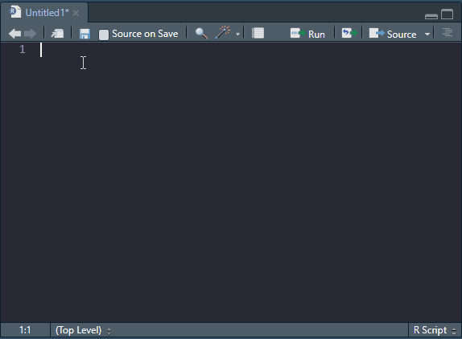

twevle <- 122 R basics
2.1 What is R?
R is a computer software, but it is also a programming language1. The programming language allows us to write computer programs in a language that is especially well suited for data analysis. The software allows for efficient interpretation of the language and the production of, among other things, high quality graphics. In it’s most basic form, R can be thought of as a oversized calculator. In this lesson we will establish this and go further by understanding the basic R syntax.
1 See here for a more technical definition.
2.2 Objects and assignment
Everything in R are objects (Chambers 2009). What does this mean? Let’s say that we want to store some information in R, this information is a value, let’s say the number 12. To store this information we will assign the value to an object and call this object twelve. An object is a container of data “of all kinds†(Chambers 2009, 111) that we create in our working memory to hold our data (the value). We assign the value to our object by using an assignment operator. The most common assignment operator is <-. Think of the assignment operator as an arrow pointing from the value towards the object, like this:
Chambers, John M. 2009. Software for Data Analysis: Programming with R. Nachdr. Statistics and Computing. New York, NY: Springer.
We can also reverse the direction of the assignment operator and make the object and value change places.
12 -> twelveTo call an object, or tell R that we want to look at our object, we would simply type the object name in our R console. We may try this in the R script box below. I have already entered some information in the script, these are comments starting with the hash symbol (#). The comments tells us what to do. You can enter R code on the line below the comments, R will ignore everything following a comment sign and start to interpret code again on the subsequent line. When you have entered your code, press “Run Code†to inspect the results.
It is also possible to use the equal sign (=) to assign data to objects. The equal sign used as an assignment operator, as in twelve = 12, is equivalent to twelve <- 12.
2.2.1 R as a giant calculator
R can make use of all basic arithmetic operators like plus (+), minus (-), divided by (*) and multiplied by (/). These operators can be used on objects, and directly on values. In the script box below, try to calculate (and store) the following:
\[y = 5 * 2 + 1 * 0.5\] Then use the object and add 10, store the new result in a new object called z.
A possible solution to the above challenge would be
y <- 5 * 2 + 1 * 0.5
z <- y + 10The result of your computations should be 20.5. In the above example we have discovered that mathematical expression can be written using values and objects already stored in the environment.
We can also use functions to perform mathematical operations on objects. Examples of such functions are log(), exp(), abs() and sqrt(). A function is a special object that itself can be use other objects (or variables/values) as input. A function often takes arguments, these arguments are supplied to the function inside its brackets.
The log() function returns the natural logarithm of a numeric object. Mathematically, the log function returns the exponent (\(x\)) with the base \(e\) that give us our input number \(y\) (\(e^x = y\)). To get the natural logarithm of 100 we would use R and write log(100) which results in 4.6051702. This corresponds to \(100 = 2.718282 ^ {4.60517}\). The base \(e\) must be raised to the power of 4.60517 to yield 100.
What is the natural logarithm of 50? Try to calculate it in the script box below.
We can of course make similar computations on stored objects.
Above we have learned that numbers and objects that store numbers can be used in computations using basic arithmetic operators and functions that perform mathematical operations.
2.2.2 Different types of data
Above we have worked on numeric data. These are values represented either as integers (whole numbers; e.g. 1, 2, 3) or what is sometimes called “double†or “numerical”, i.e. decimal numbers (e.g. 1.2 or 2.781).
In the code example below we will store an integer and a double and inspect its “class”, the class decides what R can do with an object.
num <- as.numeric(2.456)
int <- as.integer(2)
class(num)
class(int)Use the script box below to test out the code example. What is the purpose of the class function?
There are other types of data that we can use in R, these are character, logical and complex (we will not discuss complex numbers further here).
A character or string value can be though of as text, e.g. "this is a character" could be the data contained in a character object. A logical value is either TRUE or FALSE. This type of data is also known as Boolean
As mentioned above, the type of data restricts what operations that can be performed using the data. For example, we cannot do mathematical operations on characters or logicals. Try out the code below and inspect the results. What does the error message tells you?
We can define data types by using functions such as as.numeric() or as.character() these will tell R to try to convert data to a specific type. If this is not possible you will get an error message. Try the code below and inspect the error message.
The result of the conversion of a character to a numeric is NA, that can be read as Not Available. NA is an example of a protected symbol in R. We cannot use this as a name of an object. It is used to indicate missingness, or missing values.
In the above section we have identified different types of data that are used in R, next we will try to combine single values into more complex data representations.
2.3 Combining data
So far we have work on single valued objects. This is not very efficient. Conveniently, R has an efficient way of working with data using vectors. A vector is a structure for combining data of the same type. For example, we can construct a numeric vector of heights using the combine function c(). Let’s say height <- c(1.74, 1.81, 1.51, 1.92). An additional vector of weights can also be constructed as weight <- c(85.1, 81.1, 48.9, 88.4). We can use these vector to do calculations, these calculations will be “vectorized”.
The body mass index is calculated as
\[BMI = \frac{\text{Weight (kg)}}{\text{Height (m)}^2}\]
Using vectorized operations we can calculate BMI for each row of the two vectors defined above simply using BMI <- weight/height^2. Modify the code below to inspect each vector and the resulting BMI vector.
Vectors can be combined into data frames. These are convenient tabular, two-dimensional representations of multiple, equal length vectors. To combine the vectors defined above into a data frame we could directly put them in a data frame. In the example below we use df to name the data frame. To add a new variable (or vector) to the data frame we can use the $ operator which creates a new variable (or overwrites it!). Notice also that we access weight and height in the existing data.frame using the $ operator.
Alternatively we may access specific rows and columns of data frames using brackets. The syntax is df[row,column]. To access all row of a specific column, for example “weight†we would write df[,1]since weight is the first column of the data frame called “df”.
Try to calculate BMI using the row index method explained above.
A data frame can combine different data types in the same data structure. The data are, as indicate above related by row as one row contains e.g. weight and height from one individual. We might add information on the individuals by adding variables of different types. Modify and run the code below to inspect the data frame.
We can further combine data into a list. A list can contain different data structures or values/objects. A list can even contain other lists. To combine objects into a list we simply put them into the list() function. To access objects in lists we can use double brackets. Using the code below we could access the second item in the list using my_list[[2]]. Objects in lists can also be named, in such cases we can use the $ operator to access them. Modify the code below to explore this concept.
2.4 Logical operations and conditions
In the future you will select observations based on some specific conditions. This could for example mean that you would want to keep all observations where the variable X is greater than 5. To communicate this to R we would create a vector of TRUE and FALSE. R will keep all observations that satisfy our condition and therefore are TRUE.
In the script box below, we first construct a vector of numbers followed by a logical test. The test will result in TRUE when the condition is satisfied. Notice that the “test†gives you a vector of TRUE/FALSE.
In the example above we used the ‘greater than’ operator (>). There are a few more usefull operators:
| Operator | Meaning |
|---|---|
== |
equal to |
!= |
not equal to |
< |
less than |
> |
greater than |
<= |
less than or equal to |
>= |
greater than or equal to |
Try to modify the script box above to test out the different operators.
Using the “AND†operator (&) we can add conditions that needs to be fulfilled to produce TRUE. This might be useful when two or more conditions needs to be satisfied. In addition to our values stored in my_values in the script box above, we might want to see the condition colors == "green" satisfied as well, where colors is a vector of colours. Run the codse below and inspect the results
We can store the results in a vector or use it to select values in a vector. Using brackets on a vector (or data frame) we can select observations based on a logical vector (produced by logical tests).
Using the “NOT†operator (!) we can perform negation on any of the logical operators. Let’s say we want have all observations that do not satisfy our filter above. Run the code below and inspect the results. Notice the parentheses which indicates that we put the negation on the whole expression.
The “OR†operator (|) gives us the possibility to select values that satisfies one or both of tqo conditions.
my_values > 5 | colors == "green"
Try to put the above in square brackets and filter one of the vectors to see that you get what you anticipate.
Finally, we could test if a logical vector contains TRUE or if all values are TRUE. To do this we would use the functions any() and all().
2.5 Functions
We mentioned above that everything in R is an object. This is true even when we talk about functions. Functions are special kind of objects, they contain code that upon execution perform certain tasks. A function may need to have certain arguments specified. Arguments are user input into the function to specify how the functions should behave. A common usage of a function is to do something with data that you, the user, supply to the function.
Let’s specify a function to see what it does. We have a vector of numbers, let’s say my_values. We want to construct a function that calculates the mean of that vector. The function may later be used to calculate averages of other vectors so we should try to make it as general as possible. Let’s start with the design of the actual calculation2.
2 Don’t be afraid of mathematics! Take it slow and translate it to your language. Some books on statistics are a lot easier to read if you are prepared to read simple mathematical expressions. Sometimes it is also good to be able to write an expression. Mathematics, like computer code, is also a language. To learn a new language we need to try not to be afraid!
The mean (\(\bar{x}\)) of a vector (\(x_i\)) is calculated as
\[\begin{align} \bar{x}&=\frac {1}{n} \sum_{i=1}^{n}x_{i} \\ &= \frac {x_{1}+x_{2}+\cdots +x_{n}}{n} \end{align}\]
Which we can read as “one over the number of observations times the sum of all observations”. Or, as in the second row, “the sum of all observations divided by the number of observations”.
We can translate this to code. A simple way to do this is to use other functions, in this case length() that returns the number of observations (or length) in a vector, and sum() that gives us the sum of all observations in a numeric vector. In the code block below I have simply combined data with the expression needed to calculate the average.
some_values <- c(3, 4, 5, 6, 7, 8)
1/length(some_values) * sum(some_values)The next step is to put the code into a function. A function is defined using a special function, called function! Confusing? Yes. Let’s see how it is done.
my_mean_function <- function(DATA) {
1/length(DATA) * sum(DATA)
}Using function we define the function called my_mean_function. Using the assignment operator it is stored in our environment (R’s working memory). The function “body†contains the code. It says that it will use an object called DATA that should be given as an argument in the function call, notice that we have defined the function with an argument called DATA.
Since we are not storing the output from the calculation 1/length(DATA) * sum(DATA) in any new object inside the function running the function in our R session will return the mean of what ever we define as DATA.
In the script block below we have everything defined. Try out the function by modifying the code so that it prints my_mean.
Of course, there is already a function that will give you the mean of a numeric vector and it is called mean(). In the simple case, the mean() function takes one argument x that should be a numeric vector. It could look like this:
mean(my_values) # Calculate the mean of your vector.Defining functions for yourself can be a very efficient way of performing data analysis, but most functions that you need are already specified in R. Other people have already gone trough the trouble of defining functions that are easy to use for specific tasks. In the next lesson we will explore the package handling system in R.
2.6 File formats for editing and executiong R code
A confusing part of using R is that we are really just able to communicate with R through the console. There are however a lot of methods to do this, and save your input, and output for later. This is central to how we will work with R: We create some input (code), R returns results, like numbers, text or figures and these can be formatted to be saved in different formats.
2.6.1 R scripts
The most basic file format for R code is an R script, as we have already touched upon. An R script contains code and comments. Code is executed by R and comments are ignored. Ideally, R scripts are commented to improve readability of what the do. Commenting code is also a good way of creating a roadmap of what you want to do. In the image below (Figure 2.1), R code is written based on a plan written with comments. Note that when a line starts with at least one # it is interpreted by R as a comment.

Later we will introduce another format, a format that enables combining R code with prose, tables, figures and more.